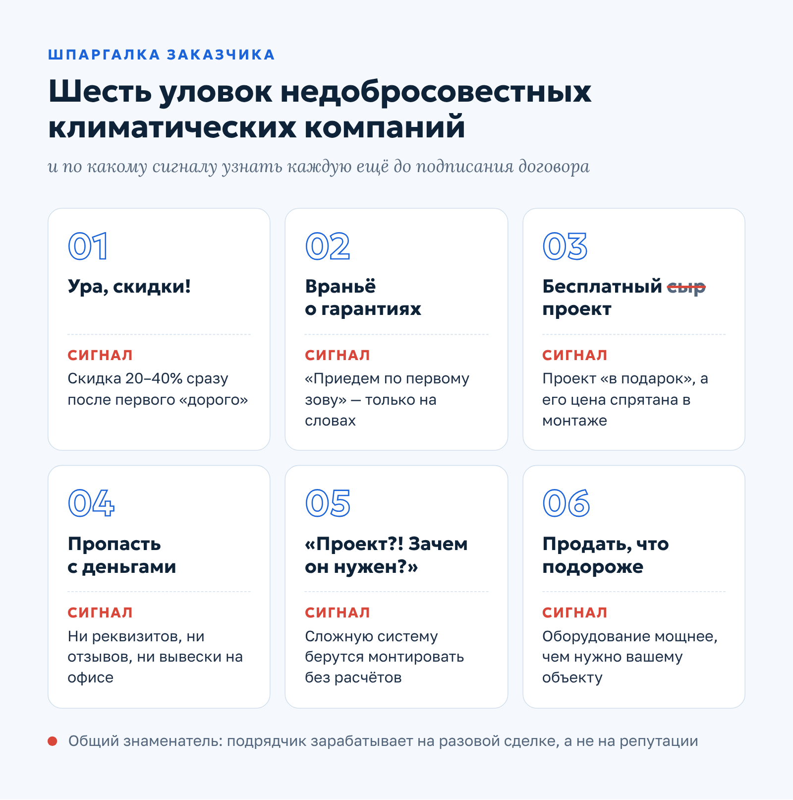
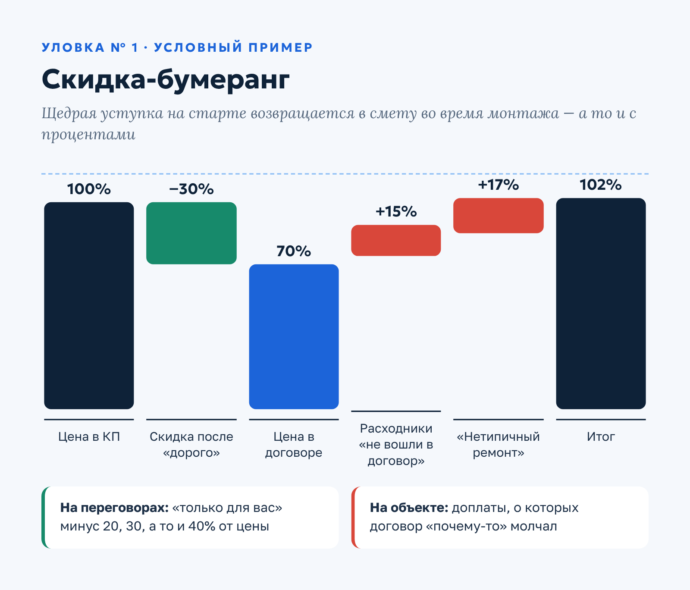
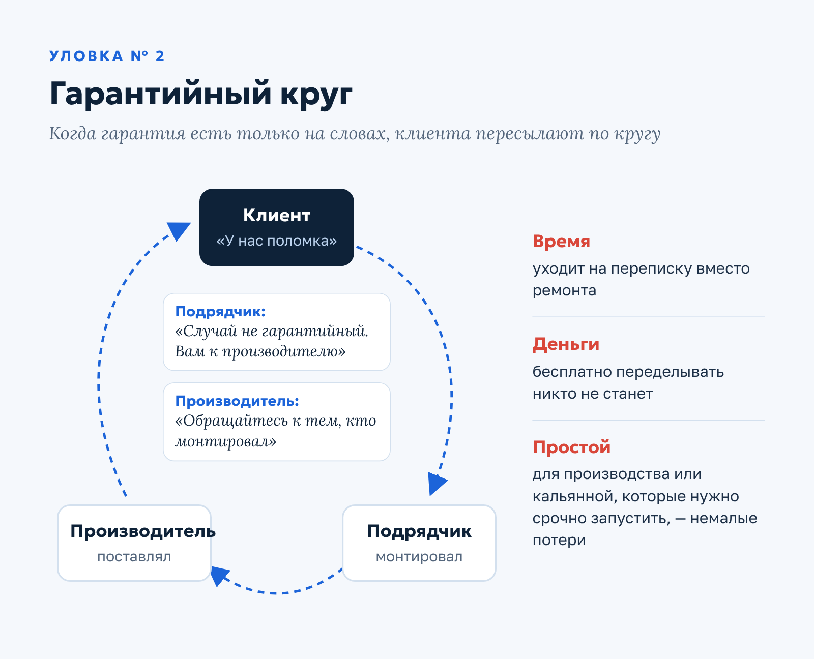
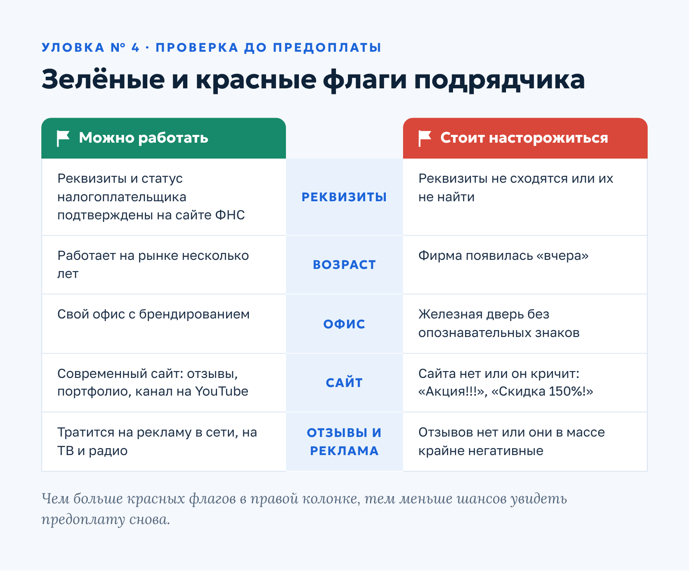
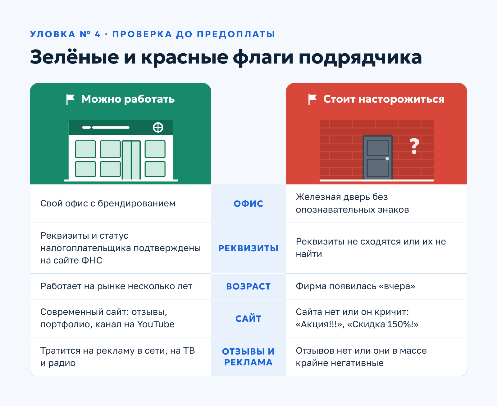
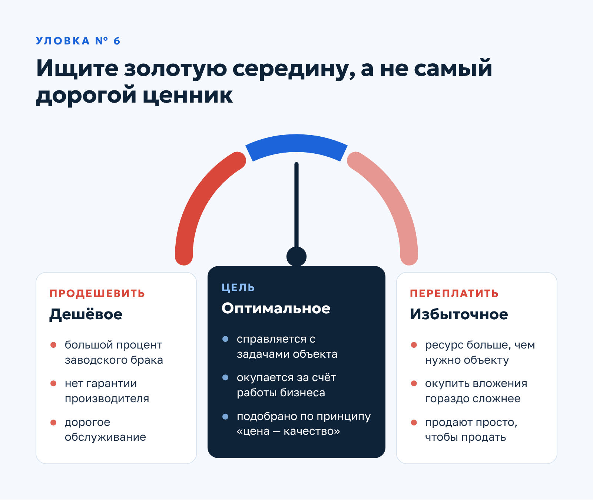

Qwent · Авторская статья · контент-маркетинг
Авторская статья для инженерной компании: 6 способов обмана клиентов климатическими компаниями
О заказчикеQwent — инженерная компания из Москвы (сайт ceds.ru): монтаж и обслуживание систем вентиляции и кондиционирования.
Задача
Развернуть тезисы заказчика в статью о приёмах недобросовестных климатических компаний, которая продаёт Qwent через доверие, а не через рекламу.
Решение
Написала шесть разделов с живыми заголовками («Ура, скидки!», «Бесплатный сыр проект»), речевыми портретами менеджеров и иронией при деловом тоне. В каждом разделе — механика уловки, почему она срабатывает и как от неё защититься.
Результат
Заказчику статья очень понравилась: он оставил восторженный отзыв.
6 способов обмана клиентов климатическими компаниями
Строительный рынок крупных городов перенасыщен. Подрядчики ведут борьбу за «место под солнцем» и в погоне за прибылью далеко не всегда выбирают честные методы. Страдают от этого клиенты: они переплачивают, получают некачественное оборудование и плохо выполненную работу.
Обман рядового покупателя будет существовать, пока существует коммерция. Но если обсчёт при покупке глазированного сырка оставит на душе лишь неприятный осадок, то последствия некорректного монтажа инженерных систем будут куда серьёзнее.

В этой статье рассказываем об основных приёмах недобросовестных климатических компаний: от самого распространённого до самого «дорогого». А после каждого — короткая подсказка, как не попасться на удочку.
1. Ура, скидки!
Обман на этапе согласования цены — самый распространённый вариант. Реализуется он, как правило, двумя способами:
- На этапе обсуждения работ подрядчик называет рыночную или завышенную цену, а после возражений клиента очень охотно предлагает скидку в 20, 30, а то и 40%.
- Компания демпингует: сразу значительно занижает цену и привлекает большое число потенциальных клиентов.
В обоих случаях цель одна: урвать здесь и сейчас. Взять с заказчика деньги, как-то сделать работу и забыть. Такие подрядчики не работают на репутацию и долгосрочную перспективу, им не нужно, чтобы благодарные клиенты возвращались снова и снова.
Как правило, в таких организациях очень сильный отдел продаж — и это их единственное достоинство, которое клиенту ровным счётом ничего не даёт. Бойкие менеджеры без нотки сомнения в голосе уверяют: «Всё будет в лучшем виде», «Мы — № 1 на рынке», «В эту стоимость входит всё: и проект, и монтаж, и гарантия 10 лет, всё по нормам, а если что не так, приедем по первому зову и бесплатно всё починим».
Что происходит после подписания договора
Как это работает в действительности? После подписания договора интерес к заказчику быстро угасает, и начинается совсем другая история. Во время монтажа не раз и не два всплывают ситуации, когда нужно доплатить за расходники, которые почему-то не попали в договор. Или выясняется, что у вас нетипичный ремонт, который мешает работам и усложняет монтаж.

В итоге первоначальная стоимость почти всегда вырастает на ту же сумму скидки, которую изначально предложили клиенту, а то и больше. Вы пытаетесь спросить: «Почему так?» Но менеджер по продажам уже не так любезен или совсем не берёт трубку.
Почему всё это сходит с рук
Клиент, соглашаясь на низкую стоимость и подписывая договор, оказывается в западне. Недобросовестные подрядчики рассчитывают на то, что вы не сможете от них отказаться. Сделать это действительно непросто:
- Далеко не каждая компания возьмётся доделывать чужое. Велик риск, что из-за ошибок проектирования и монтажа в будущем возникнут серьёзные проблемы, а претензии предъявят уже им.
- Доработки стоят дороже. Если другой подрядчик и возьмётся за работу, то по высокой цене и с максимумом пунктов в договоре, которые снимают с него всякую ответственность.
В итоге заказчику приходится выбирать: переделывать всё заново, что ещё дороже; обращаться к другой компании, доплачивать и принимать все риски; или продолжать работать с действующим подрядчиком и вносить доплату. Оказавшись в такой ситуации, клиенты, чертыхаясь, выбирают последнее. На то и расчёт.
Как защититься. Насторожитесь, если скидка в 20–40% появляется сразу после первого «дорого». Просите смету, где перечислены все расходники и работы, и заранее уточняйте, что может стать поводом для доплат.
2. Враньё о гарантиях
Недобросовестные подрядчики не гнушаются откровенным враньём о гарантиях. «Конечно, если что, сразу звоните, приедем, починим. Да, круглосуточно, да, в любое время. Гарантия на всё: и на оборудование, и на работы» — знакомый многим речитатив.
По факту, когда клиент обращается за ремонтом, находится тысяча причин не признавать случай гарантийным, и доказать обратное вы не сможете. Выйдет из строя оборудование или обнаружится брак — вас отправят к производителю. Его, кстати, тоже важно выбирать правильно: компания с ответственным подходом выполнит гарантийные обязательства, а недобросовестный производитель отправит к тому, кто всё смонтировал. И круг замкнётся.

Переделывать бесплатно никто ничего не станет. В итоге клиент потеряет и время, и деньги. А если у вас производство или кальянная, которые нужно срочно запустить, — немалые деньги.
Как защититься. Не полагайтесь на устные обещания. Проверьте, что сроки и условия гарантии на оборудование и на работы прописаны в договоре, и уточните, кто отвечает за гарантийный случай: подрядчик или производитель.
3. Бесплатный сыр проект
Очень популярная по нынешним временам уловка: «Закажите монтаж и получите проект в подарок!». Это не более чем маркетинговый приём. Проектирование инженерных коммуникаций — сложная, трудоёмкая работа, которая требует высокой квалификации. Её делают люди, которые получают за это деньги.

Предлагать клиенту бесплатный проект значит лишь одно: взять с него эти деньги другим путём, например заложить их в стоимость монтажа. Более того, «бесплатность» развязывает недобросовестному подрядчику руки. Он может предложить типовой проект, который не соответствует вашим задачам и в дальнейшем принесёт колоссальные убытки.
Проектирование — самый важный этап в этом виде работ. Экономить на нём точно не стоит.
Как защититься. Спросите, где в смете учтена стоимость «подарка», и попросите показать, какие расчёты сделаны именно под ваш объект.
4. Пропасть с деньгами
Популярная история из «лихих 90-х», которая, к счастью, сейчас встречается всё реже. Но перестраховаться стоит. Прежде чем вести дела с подрядчиком, обратите внимание на два момента:
- Реквизиты. Тщательно проверьте реквизиты и статус налогоплательщика на сайте ФНС.
- Позиционирование офлайн и онлайн. Тратит ли компания деньги на наружную рекламу и рекламу в интернете, на ТВ и радио? Работает на рынке несколько лет? У неё есть свой офис с брендированием? Современный сайт с отзывами клиентов, портфолио и каналом на YouTube, где можно посмотреть сданные объекты? Скорее всего, намерения серьёзные.
А теперь обратная картина. Фирма появилась «вчера», отзывов о ней нет или они в своей массе крайне негативные. Сайта нет, либо он пестрит заголовками «Акция!!!», «Только сегодня скидка 150%!», «Проект в подарок при первом заказе!», а по указанному адресу — железная дверь без опознавательных знаков. Здесь стоит насторожиться.

В деловой практике последних лет случаи, когда компания берёт деньги и исчезает, всё-таки редки. Но бдительность здесь точно не помешает: проверка подрядчика обойдётся куда дешевле, чем потерянная предоплата.
Как защититься. До перевода денег сверьте реквизиты на сайте ФНС, поищите отзывы на независимых площадках и, если есть возможность, приезжайте в офис лично.
5. «Проект?! Зачем он нужен?»
Звучит диковато, но компании, которые встречают клиента таким возражением, существуют. Бывают ситуации, когда проект действительно не нужен: например, чтобы проложить один воздуховод или установить кондиционер в квартире. Но нередки случаи, когда некоторые подрядчики умудрялись монтировать сложные промышленные системы вентиляции БЕЗ ПРОЕКТА.
Что в итоге ждёт клиента? Низкий ресурс вентсети: из-за маломощного оборудования, воздуховодов и решёток с заниженным сечением система не справляется со своей задачей.
Компании, которые завлекают клиента низкой ценой, часто предлагают техническое решение, которое дешевле в реализации, но не закрывает потребности заказчика. На этапе согласования вам будут рассказывать сказки: «это то, что надо», «оптимальное решение под ваш бюджет» и прочее. А по факту вы получите плохой проект, низкое качество оборудования и монтажа со всеми вытекающими.
Как защититься. Если объект сложнее квартиры, требуйте проект до начала монтажа и спрашивайте, как рассчитаны мощность оборудования и сечения воздуховодов.
6. Продать, что подороже
Часто встречаются ситуации, когда клиенту намеренно продают дорогое оборудование с избыточным для его производства или коммерческого объекта ресурсом. Просто чтобы продать. Такие подрядчики не считают экономическую целесообразность покупки и меньше всего заинтересованы в быстрой окупаемости ваших вложений.
Но ведь вентиляция и кондиционирование — серьёзная финансовая инвестиция, которая должна окупиться за счёт оборотных средств или безостановочной работы производства. Дорогое оборудование при всей его надёжности окупить с годами гораздо сложнее, чем более дешёвое, которое отлично справляется со своей задачей.

Но и продешевить в этой ситуации нельзя: дешёвые установки — это, как правило, большой процент заводского брака, отсутствие гарантии от производителя и высокая стоимость обслуживания. Ориентируйтесь на оптимальное решение для вашего объекта по принципу «цена — качество».
Как защититься. Задавайте менеджерам побольше наводящих вопросов: «Почему именно это оборудование?», «А если рассмотреть аналоги другого ценового сегмента?» — и так далее.
Заключение
Мы разобрали основные способы, которыми климатические компании обманывают клиентов. Правильный подрядчик — залог сохранности финансов, душевного спокойствия и систем вентиляции и кондиционирования, которые прослужат вам долгие годы.
Остались вопросы? Звоните по телефону +7 (495) 055-72-55 — проконсультируем по любым вопросам. Техническое задание присылайте на order@ceds.ru.